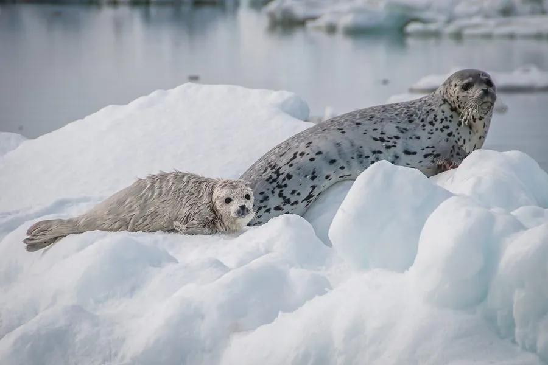

哺乳动物 · 动物界
斑海豹 Phoca largha

北太平洋北部的海豹，身体布满深色斑点，在中国辽东湾的冰面上繁殖，是唯一在中国海域繁殖的鳍足类。
- 分类
- 门脊索动物门纲哺乳纲目食肉目科海豹科属斑海豹属
- 栖息环境
- 北太平洋北部的海冰、浮冰与近岸海域，繁殖期依赖稳定浮冰
- 地理分布
- 白令海、鄂霍次克海、日本海及中国黄海、渤海辽东湾
- 保护级别
- IUCN 无危（LC）；中国国家一级保护动物
物种志
斑海豹体长 1.4–2.0 米，体重 80–150 kg，雄性略大于雌性。它的身体呈纺锤形，头部圆钝，没有外耳廓，四肢特化为鳍状；被毛为灰白至银灰色，全身散布深褐色至黑色斑点，幼崽出生时覆白色胎毛。
斑海豹分布于北太平洋北部，包括白令海、鄂霍次克海、日本海和黄海，在中国辽东湾有繁殖群体。它多在海冰上休息和繁殖，以鱼类、甲壳类和头足类为食，善潜水，可在水下停留数分钟到十几分钟。每年冬季，斑海豹会聚集到辽东湾的浮冰上产仔，幼崽在冰上哺乳约 3–4 周。由于海冰减少、污染和人类干扰，中国海域的斑海豹种群受到威胁，被列为国家一级保护动物。
形态与习性
- 食性鱼类、甲壳类与头足类
- 体长1.4–2.0 m
- 体重80–150 kg
- 寿命约 25–35 年
- 繁殖在浮冰上产仔，哺乳约 3–4 周
- 潜水可在水下停留数分钟到十几分钟
- 外形没有外耳廓，全身散布深色斑点
趣味知识
- 斑海豹没有外耳廓，只有小小的耳孔，头部显得圆钝。
- 它在中国辽东湾的浮冰上繁殖，是唯一在中国海域繁殖的鳍足类。
- 幼崽出生时覆白色胎毛，在冰上哺乳约 3–4 周。
- 斑海豹善潜水，可在水下停留十几分钟。